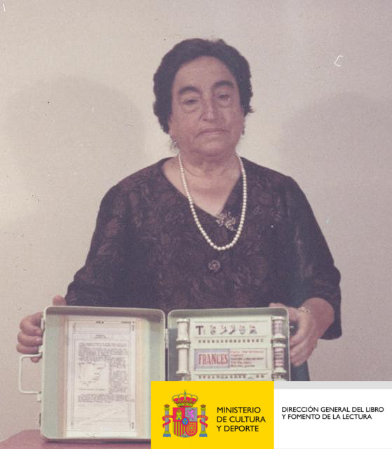
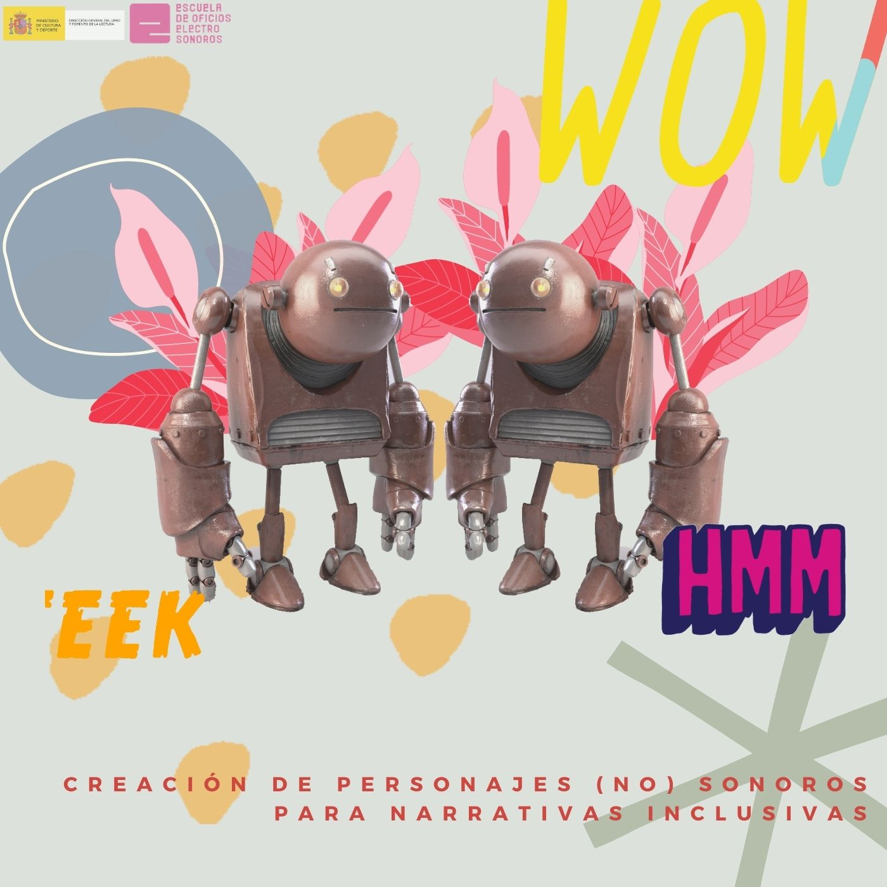

En el año 2019 recibimos una subvención del Ministerio de Cultura para el Fomento de la Lectura al proyecto "Cuentos Electrosonoros". Nuestra compañera Mónica Montoya lideró este fantástico proyecto para el que realizó una serie de talleres, también durante el tiempo de confinamiento.
Este proyecto se lo dedicamos a Angela Ruiz Robles, una maestra, escritora e inventora que fue precursora en españa del libro electrónico.
 Como resultado de este proyecto elaboramos una lista de libros para trabajar la música en el aula, mediante el fomento de la lectura:
Paco y el rock · Magali Le Huche · Timun Mas Infantil (a partir de 1 año)
Ella Fitzgerald · Bàrbara Alca · Mª Isabel Sánchez Vegara · Alba Editorial (a partir de 3 años)
Harmonicus · Sergi Raya · Esteve Molero · Dani Vizoso · Vox (a partir de 3 años)
La música del mar · Susanna Isern · Marta Chicote · Cuento de Luz (a partir de 4 años)
Libro de los sonidos · Deborah Underwood · Renata Liwska · Editorial Jaguar - Miau (a partir de 4 años)
El gran libro de los instrumentos musicales · Pronto · Editorial Edelvives (a partir de 6 años)
¡Oh, música! · Aliki · Editorial Juventud (a partir de 7 años)
Las maravillosas aventuras del Sr. Soul · Andreu Cunill · Tim Sanders · Editorial 66 RPM (A partir de 8 años)
El joven Lennon – SM 1988 / Cruïlla 1992. La balada del Siglo XXI – SM 1989
La guitarra de John Lennon – Timun Mas 1990
En busca de Jim Morrison – Timun Mas 1990
El gran festival de rock – Timun Mas 1990
Alma de Blues – Timun Mas 1990
El último set – SM 1991
Otra canción en el paraíso – Timun Mas 1991
Los sonidos del silencio – Timun Mas 1991
Banda sonora – Siruela 1993 / 2006
Las fans – Espasa Calpe 1993
El asesino del Sgt.Pepper's – Edebé 1994
Concierto en Sol Mayor (Premi Joaquim Ruyra) – La Galera 1997
Campos de fresas – SM 1997
Paradise Rock - SM 2017
Lo que yo pienso (de todo) / El que penso (sobre tot) / O que eu credo (de todo) – Kalandraka 2018